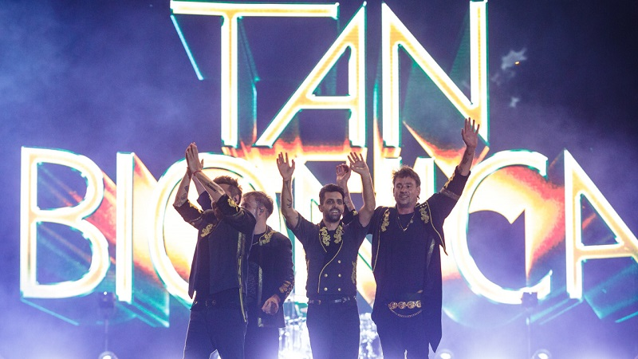

Será la última noche mágica. Ni más ni menos que como lo anunció Chano. Ahora, el gran interrogante es saber cuándo será el show de Tan Biónica. La reunión del último viernes, en uno de los escenarios del Lollapalooza, sin dudas sorprendió a todos. No se imaginaban ver otra vez juntos a Chano, Bambi, Diega y Sebi. Habían pasado siete largos años, desde que decidieron separarse. Y si sólo algunos creían en la recuperación del cantante, muchos menos eran los que pensaban ver de nuevo a los cuatro tocando. Frente a más de 100 mil personas. Y tocando cuatro de sus más icónicos hits. Luego de la ovación y de que ese instante mágico se viralizara sin control, el gran interrogante pasa por saber cuándo será el regreso oficial de Tan Biónica. También si se tratará de un solo show, si habrá más de uno y cuál será el lugar elegido.
Tan Biónica es un grupo musical argentino surgido en Buenos Aires en el año 2002 formado por Chano, Seby, Bambi y Diega. Donde Chano es el líder de la banda, esta logro popularidad por sus albunes Obsesionario con su canción Ella y Destinología con su canción Ciudad Mágica. Dijo Chano sobre el nombre: "El nombre del grupo es una circunstancia ocasional derivada de la urgencia de tener que nomenclar a un grupo de amigos que hacen música para poder invitar a desconocidos a un concierto", y se explaxó: "Con los años entendimos que podía referir a la fusión entre nuestra humanidad y los synthes que acompañan a nuestras canciones".
El 19 de abril de 2016 el grupo anunció su separación. Mucho se especuló en aquel entonces sobre las razones que habrían llevado a Gonzalo “Bambi” Charpentier (hermano del cantante), Diego “Diega” Lichtenstein y a Sebastián “Seby” Seoane a interrumpir su camino, cuando se encontraban en la “cresta de la ola”.Se señalaban como posibles causas la polémica en torno a Chano y sus choques automovilísticos y su proyecto de realizar un reality personal, pero el bajista, baterista y guitarrista se llamaron a silencio y nunca aclararon el porqué. ¿Pero qué fue de la vida de los integrantes de la banda de pop rock nacida en 2002? Mientras que Chano sigue siendo noticia por su vida privada, también persistió su pasión por la música. Desde 2016 –cuando se produjo el quiebre– ha lanzado El doble y El Otro, que contienen temas como Naistumichiu, Carnavalintro y Claramente, entre otros.
| Nombres | Edades |
| Seby | 42 años |
| Chano | 41 años |
| Diega | 39 años |
| Bambi | 38 años |